Creating and pushing to github repository
Ok here we go! Let's make a repository!
Please navigate to your github. Log
in and you should see your main page.
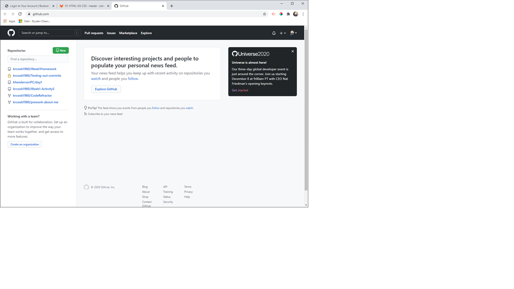
Click the green New button in the left aside bar. Enter your repository name. Make it something useful that
pertains to your content. Don't name a website about potatos something like spam. Put in a description, make
sure it is public and check "Add a README file." Finally, click the green "Create repository."
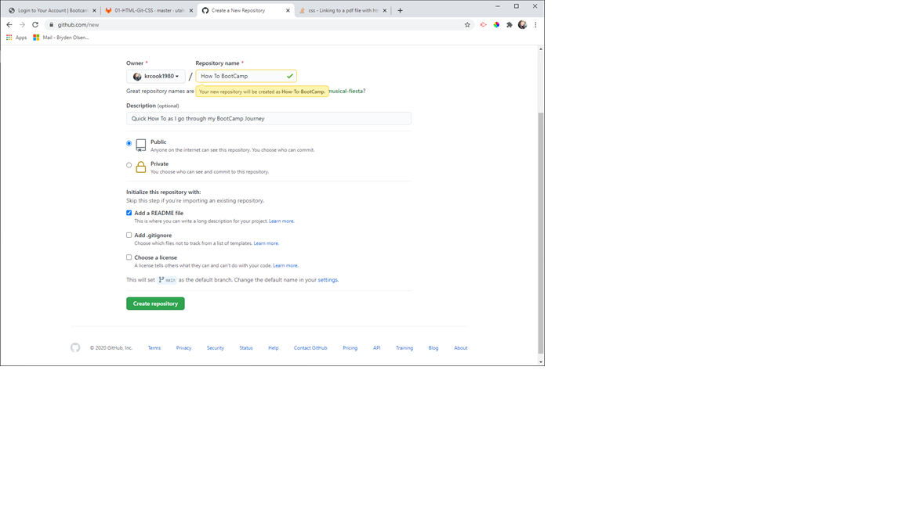
Great job, now... get that weird thing on your computer!!! Here is where you should be, click the green Code
button.
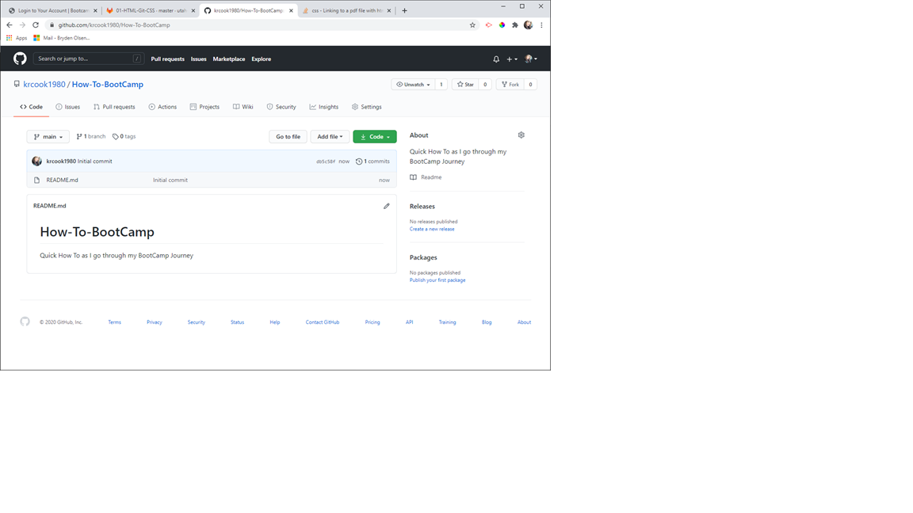
Make sure you see the SSH underlined, and then copy that code you see "git@githb.com:......"
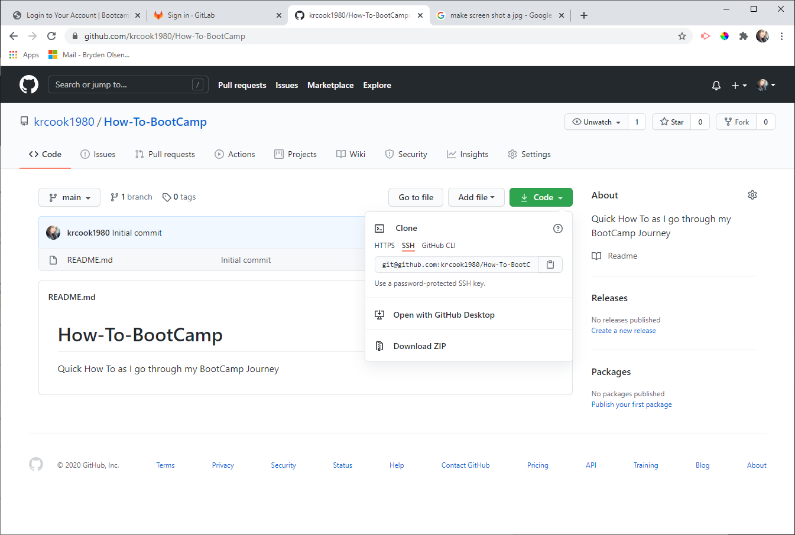
OHHH boy, here we go with the "tough part". But don't worry we can do this! Open GitBash to get to your
terminal. Very first thing... where are you? See that file path in yellow? It says I am in users/kelly.
Where do we want to be? That is up to you. Where do you want to save this repository? For me, I am saving my
work on my desktop in a folder called How To. So, that is where I want this repository.
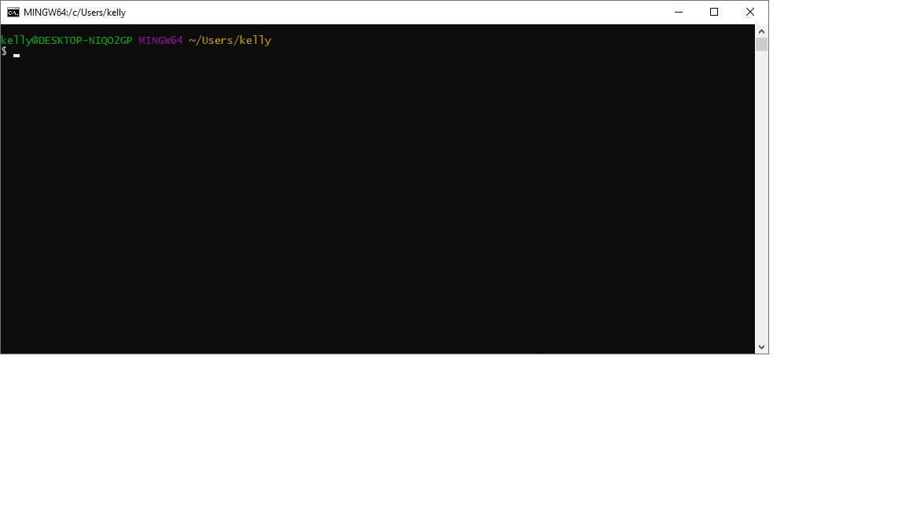
So, I am going to type some commands here.++
cd means change directory, then I follow that with where I want
to go. You can do one folder at a time, or you can do the whole path if you know it. In your spare time,
tinker with this, moving up and down through folders. Get comfortable with git, we will use it a lot. I
forgot and put a space in my folder name and have not learned that part so... I got to as far as I remember
for my folder path. So my command is cd c:/users/kelly/desktop Push enter. Now, the line
says I am on my desktop... great start!
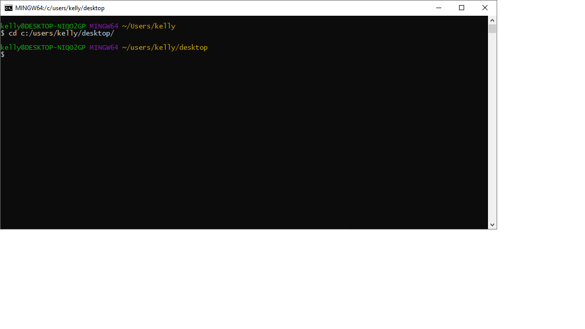
So now I need to find out what folders are in there. We are going to type ls. That means
list files. A list
of everything in that directory (or folder) comes up. Now I can simply type cd H and press
tab ...and it should
autofill the rest of that file for me.++ Great, now push enter and I am in that How To folder!
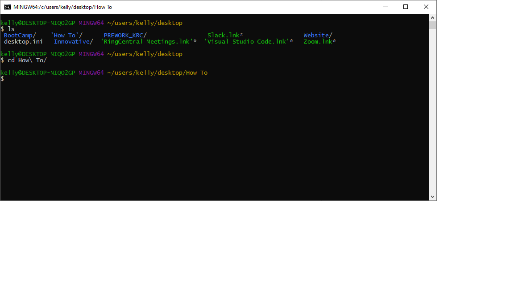
Ok here goes the magic... you copied that code from the github page. Let's use it! We start off with the git
... that tells our terminal we are going to be using git. Clone means, I want a copy. And then, in "" the
url to what you want (thats the code you copied).
Your command is git clone
"git@github.com:whatever you copied goes here"
Terminal sucks... it
doesn't let you just paste with ctrl v... try ctrl, shift, v.
Did it work? If not, quick side note. Go to the top of your terminal in the white bar, right click,
properties, and make sure Use Ctrl+Shift+C/V as Copy/Paste is checked.
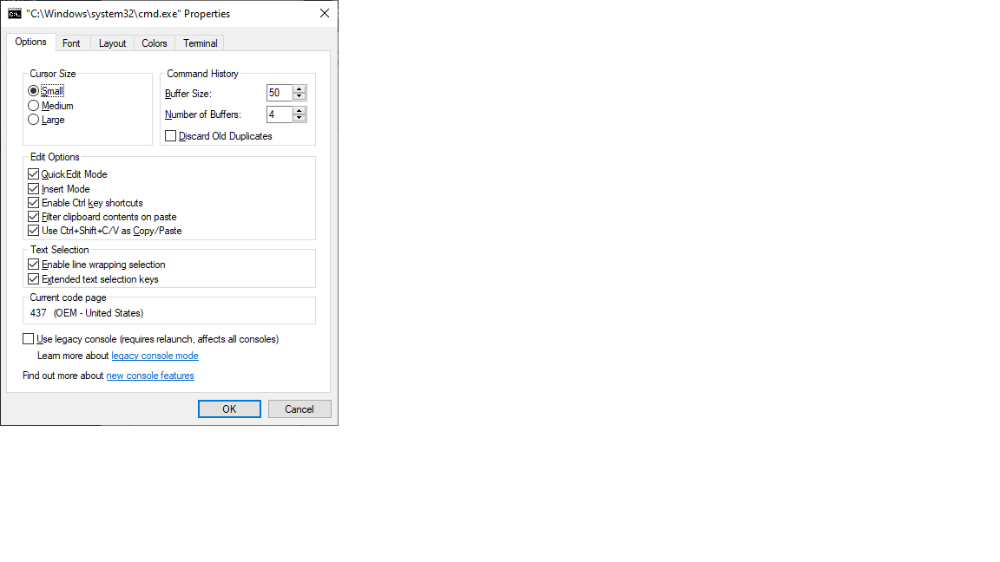
Alright... this is what we should have. If you do... click enter!

Ok, it's going! See that stuff... kinda... random looking? That means it worked!!!++
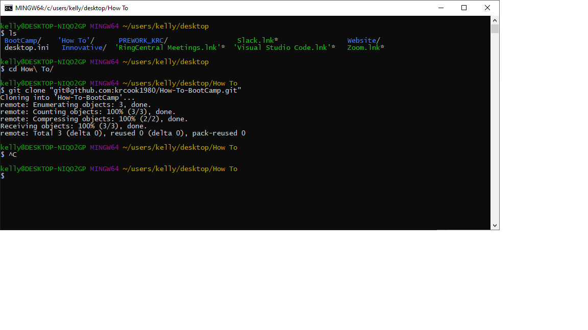
Now ... you can move files around in here but I am not that good yet so I am going to do it the old school
"easy" way. Go to your file explorer (that's the manila folder that you use to find files before you knew
what a terminal is.) Go to the folder that we were in on the terminal. For me, that was the How To folder.
Now when I am there... I see my gitHub repository folder as well... How-To-BootCamp. I want to take any
files
that I am working on or want to upload to that repository and move them inside that new folder. Before:
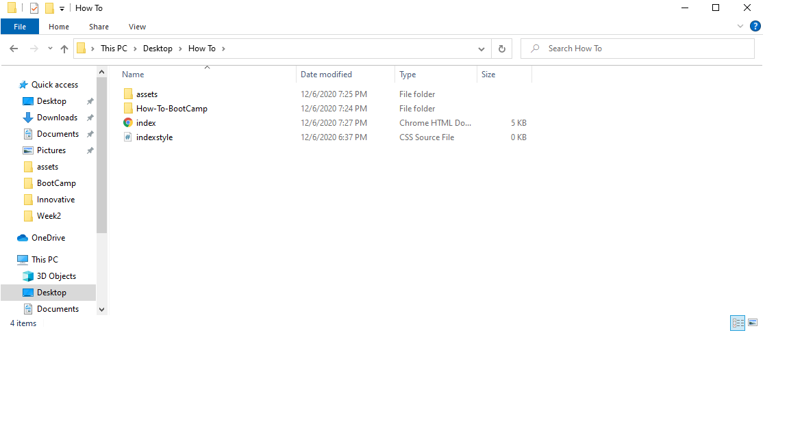
Click the file or folder you want, drag it into that new folder. Or cut and paste... whichever you prefer.
None of those can be open or they won't move. After and when I look in that new folder:
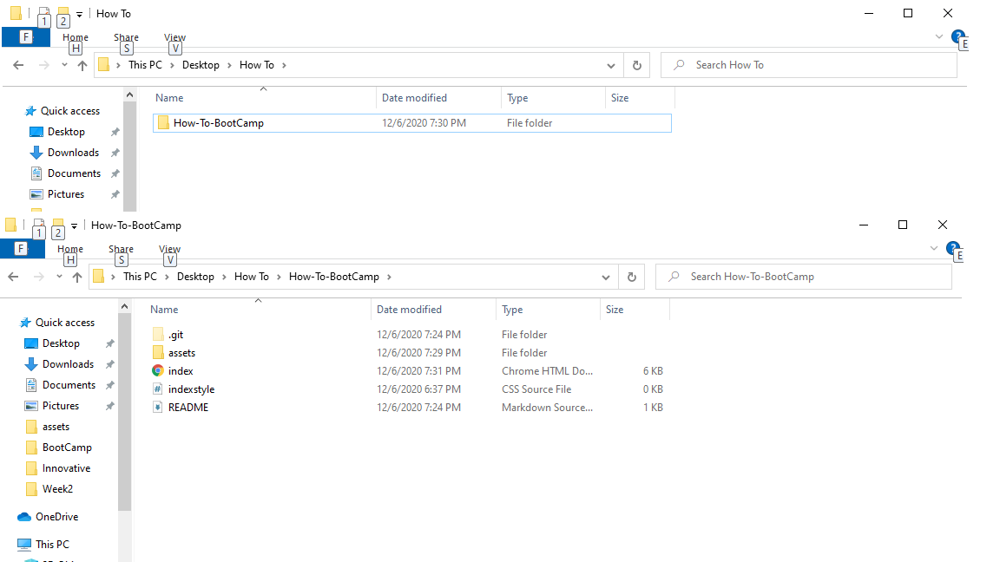
Great, back to the terminal. And here we go!!! Two things to do here. First, we need to get inside that new
git folder so if you aren't sure, type ls again. We use cd and the folder . You will know
you are in a
repository file because now the address bar reads (main) at the end... that's
our "branch"
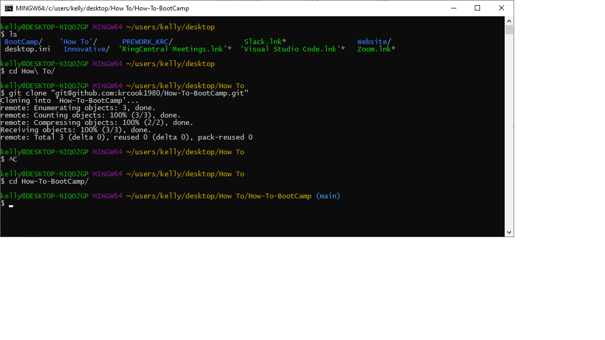
Now to get those files in there.
1) you can add one file at a time by git add filename.filetype... for example if I only want my index file
in there, it would read git add index.html. BUT 2) if you want everything in your folder then it is easier
to do git add . You need the period, it means add everything. Now press enter.
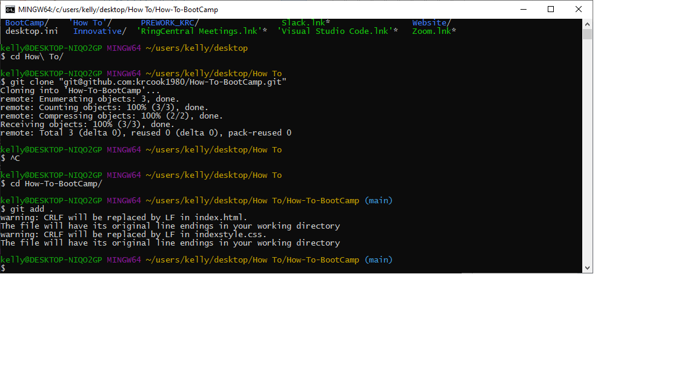
Good job if you see this weird crap. Someday we will know what it means! Now... we are going to make the
note that shows up to other people
about what changes we made to the file. This is important, try not to skip it. So we are going to do git
commit (when we push things its called commiting) and then -m to say message and our message in "". Again,
you want this to be useful information here. Don't write a dad joke in there. Explain what you did to the
file you are commiting or what it is.
Your command is git commit -m "Very informative message
here" Like so:
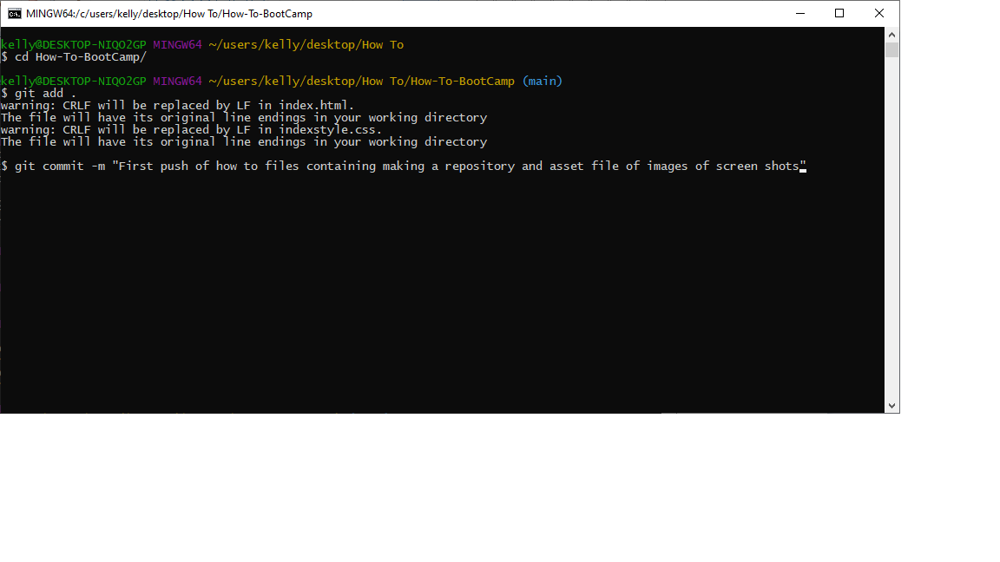
and push enter... if it did it right, you will have all kinds of stuff there.
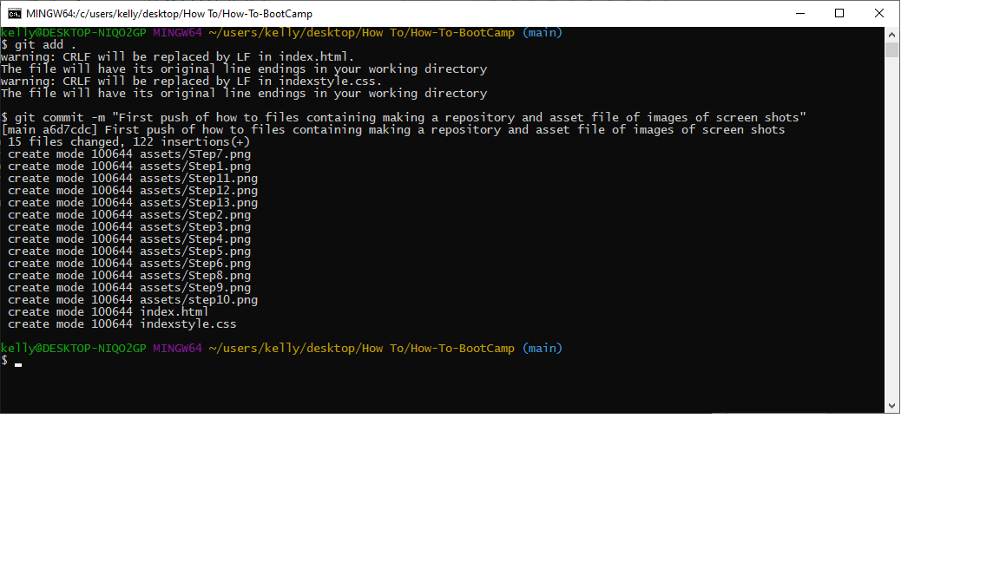
Almost there, hang in with me. Last thing... in the terminal we are going to do git push origin main
If for
some reason this doesn't work, we can trouble shoot, but in general it should. It will probably ask you for
a password, that is your github password.

There ya have it... now... final step so others can see your stuff! If you don't see your files, try
refreshing the page if you never closed it from above. Now click on settings.
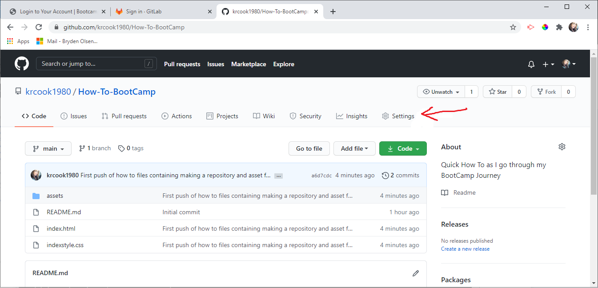
Scroll down to the bottom just above the red boxed Danger Zone you will see GitHub Pages. Inside change the
box from None to Main. Click Save. When that thing changes green... it is live to share with that url
listed.
***If it won't go green after a while, change it back to none, save, main, save, refresh til it
turns
green.
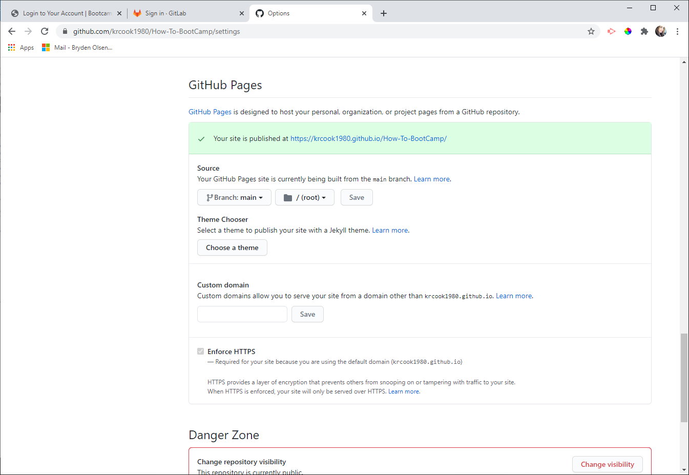
****Now, super important, go back to your code tab and click the little pencil on the
README. Be
descriptive: What is this project, what did you do, why did you do it? Screen shots are great, reference
anyones code you used, etc. A bad read me will drop your grade... make it a good one. ++
Random side notes:
1) If you misspell something in the terminal it usually gives you hints on what you should have typed or what you
need to do first if you are missing a step.
2) When I was navigating to my file and I said cd H ... I said H because my folder starts with H "How To BootCamp". But if your repository is named Potatos, you would do cd P and push tab.
IF that is not the folder you wanted, DO NOT push enter, erase and try again, maybe type more of the name and then tab.
3) If you do the clone and you do not get that info, or it gives you an error asking about a password, that means your SSH key isn't set up and that is another project for another day... I'll get it in here if it is needed.
4) For the homework, go to bootcampspot and you need to submit 2 urls. First is the live site in that green published section. The second is the url to your github respository, so just click back to it and copy it right out of the address bar. Mine for this page is: https://github.com/krcook1980/How-To-BootCamp